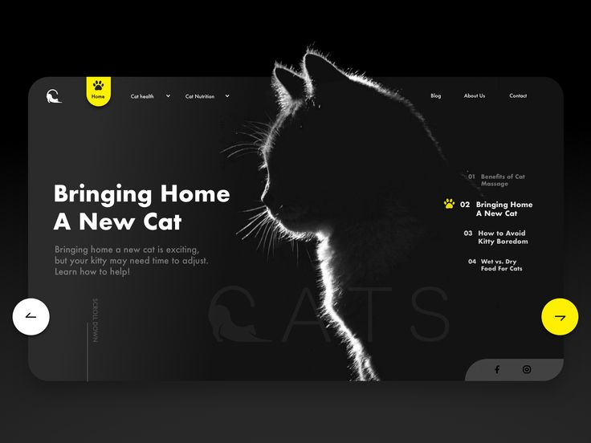

back to portfolio
How we can manage our chat
Every year, thousands of cats been aristutude from their owners while their owners are sleeping.
The Secret how make your cat love u

A good programmer drinks coffee. A great programmer is a cat.
write by a cat
Cats hide their pain and suffering as a natural survival instinct to avoid showing weakness to predators. Because of this,you must look for subtle changes in their behavior, body, and daily habits.
- Behavioral & Social Changes
- Hiding more: Spending long hours alone in closets, under beds, or in quiet, dark spots.
- Movement & Mobility
- Reluctance to jump: Hesitating before jumping onto furniture, or stopping climbing stairs.
how we can fix that
that by a fan web site that let ppl love cat and show them how cat a wonderfull and kind, the object of site is like a comunity that share advices and news, and special part that about missing cat with a maps that show all vet hopital near.
- home page
- comunity section
- missing cat section
- map
- profil and dashboard
- multi language
- and open source for other devloper can add a new features
